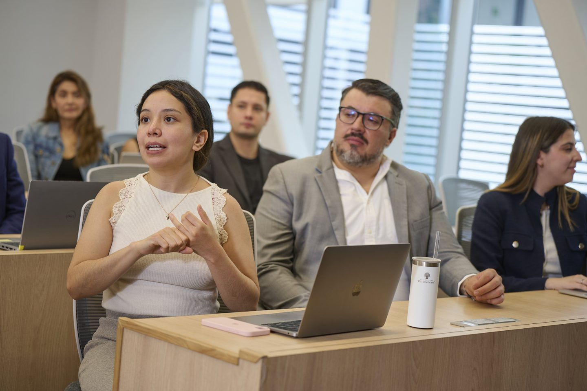
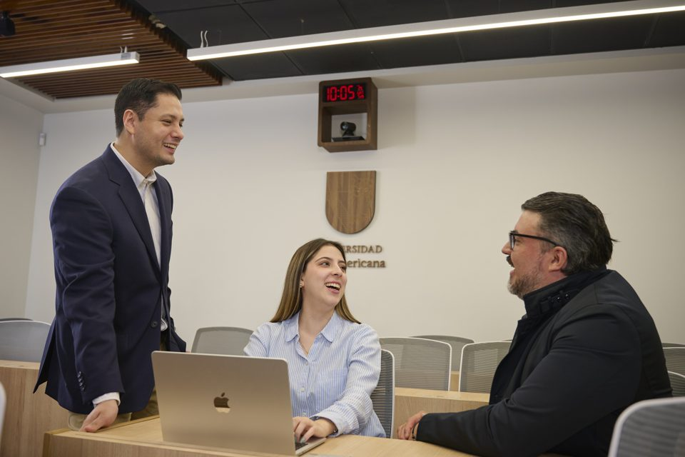

Posgrados · Ciudad de México
Posgrados en Ciudad de México
Crece profesional y personalmente en una comunidad que cree en tu potencial, con posgrados conectados con los retos de una de las ciudades más dinámicas de México.
Estudia un posgrado en Ciudad de México
En la Universidad Panamericana creemos que cada persona puede alcanzar su mejor versión. En Ciudad de México te acompañamos en ese camino desde dos campus: Mixcoac y Santa Fe.
Si buscas maestrías en CDMX, doctorados, especialidades, diplomados o cursos, aquí encontrarás opciones en áreas como Derecho, Ingeniería, Salud, Comunicación, Negocios y Humanidades. Sea cual sea tu meta, vivirás una formación exigente, humana y pensada para que tu trabajo aporte al bien común.
- Dónde estudiar
- 2 sedes Mixcoac y Santa Fe
- Oferta
- 76 programas Cinco niveles de posgrado
- Áreas académicas
- 11 áreas De Derecho a Ingeniería
- Orientación
- Personalizada Un asesor te acompaña
Dos campus, una comunidad
Conoce nuestras sedes en Ciudad de México
Dos campus, una misma comunidad. En Mixcoac y en Santa Fe vivirás el modelo de formación integral de la Panamericana. Cada sede reúne programas de distintas áreas: elige la que mejor se adapte a tu interés y a tu día a día.
-
Campus Mixcoac
Augusto Rodin 498, Col. Insurgentes Mixcoac
Es la sede con más programas de posgrado en Ciudad de México. Aquí se imparte la mayor parte de la oferta de Ingeniería, Derecho, Ciencias de la Salud, Filosofía y Comunicación, además de programas de Empresariales, Pedagogía, Bellas Artes y ESDAI.
Ver programas en Mixcoac -
Fotografía de Santa Fe pendiente
Campus Santa Fe
Av. Javier Barros Sierra 540, piso 3, Col. Santa Fe
Concentra los posgrados de Gobierno y programas de Empresariales, Derecho, Comunicación, Filosofía, Pedagogía y Bellas Artes, como la Maestría en Gobierno y Políticas Públicas, la Maestría Internacional en Finanzas y la Maestría en Mercadotecnia Estratégica.
Ver programas en Santa Fe
Oferta en CDMX
Explora los posgrados disponibles en CDMX
Encuentra el programa que conecta con lo que quieres construir. Busca por nombre o tema, o usa los filtros para ver solo lo que te interesa.
No encontramos programas con esa combinación.
Áreas académicas
Encuentra tu área académica
Cada área reúne programas con un mismo propósito: formar profesionales capaces y personas íntegras. Explora la que conecta con tu vocación.
Vida universitaria
Vive la experiencia UP en Ciudad de México
Estudiar un posgrado en la Panamericana es más que tomar clases. Es formar parte de una comunidad que te conoce por tu nombre, te reta a crecer y te invita a poner tu talento al servicio de los demás.


Una red académica conectada con la ciudad
- Profesores que acompañan. Aprende de un claustro con perfil investigador y experiencia profesional, que te guía como mentor, no solo como docente.
- Vinculación con tu entorno. Conecta con empresas, instituciones y proyectos con impacto real en la comunidad.
- Espacios para crecer como persona. Arte, cultura, deporte y bienestar, según los servicios disponibles en cada sede.
- Una comunidad viva. Conferencias, foros y actividades académicas para seguir aprendiendo y construir relaciones duraderas.
Preguntas frecuentes
Preguntas frecuentes sobre Posgrados UP en CDMX
Resolvemos las dudas más comunes para que elijas con claridad.
En Ciudad de México, la Universidad Panamericana ofrece maestrías, especialidades, doctorados, diplomados y cursos. Abarcan áreas como Derecho, Ingeniería, Ciencias de la Salud, Comunicación, Empresariales, Filosofía, Bellas Artes, Gobierno y Economía, Pedagogía y ESDAI. Puedes explorarlos en esta página y filtrarlos por nivel, área o sede.
Mixcoac es la sede con más programas de posgrado en la ciudad: ahí se imparte la mayor parte de la oferta de Ingeniería, Derecho, Ciencias de la Salud, Filosofía y Comunicación. Santa Fe concentra los posgrados de Gobierno y programas de Empresariales, Derecho, Comunicación, Filosofía, Pedagogía y Bellas Artes. En ambas vivirás el mismo modelo de formación integral.
En la sección «Explora los posgrados disponibles en CDMX» escribe el nombre o tema del programa y combina los filtros de nivel, área académica y sede. También puedes entrar desde la tarjeta de cada sede o de cada área.
Cada programa tiene su propia página con requisitos de admisión. Para costos y fechas de las próximas convocatorias, solicita información y un asesor de admisiones te responde.
Solicita información
¿Necesitas ayuda para elegir un posgrado?
Elegir un posgrado es una decisión importante, y no tienes que tomarla sin compañía. Cuéntanos qué te interesa y te ayudaremos a encontrar el programa que mejor impulse tu crecimiento profesional y personal.